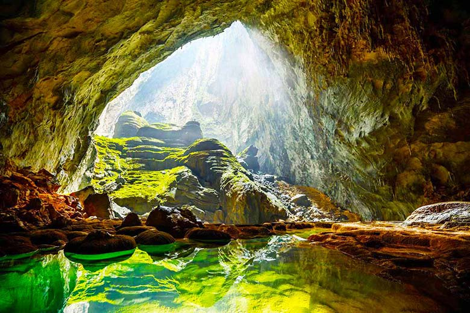

Môn Địa lí không chỉ học thuộc, mà còn đòi hỏi quan sát, phân tích và liên hệ thực tế.
Biết xác định vị trí, hướng, phạm vi lãnh thổ, kí hiệu và chú giải để rút ra thông tin chính xác.
Biết nhận xét xu hướng tăng giảm, so sánh cơ cấu và giải thích sự khác nhau giữa các vùng.
Gắn kiến thức với thời tiết, sản xuất, dân cư, môi trường và các địa danh nổi tiếng của Việt Nam.

Những cảnh quan đặc sắc của Việt Nam khiến các kiến thức về địa hình, khí hậu, tài nguyên và du lịch trở nên dễ nhớ hơn rất nhiều.